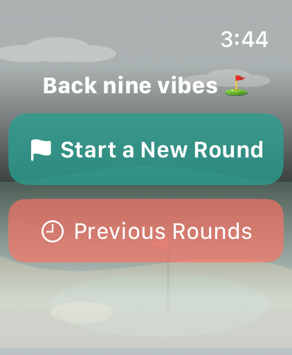
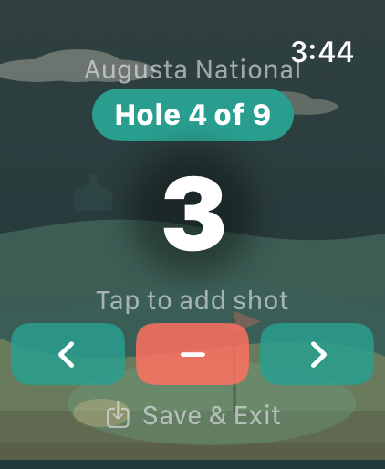
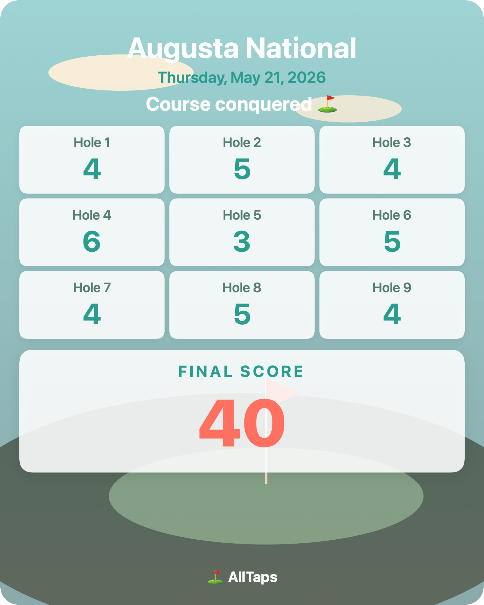

The simplest golf scorecard for Apple Watch. Tap each shot, advance each hole, and finish with a beautiful scorecard you can share with yourself or your friends.
Free · Apple Watch Series 7 or later (watchOS 10+)

Start a round

Tap every shot

Share your scorecard
What it does
Tap once per shot — big counter with custom haptics
9 or 18 hole rounds
Speak the course name with dictation, or type it
Save & exit mid-round, resume right where you left off
A beautiful illustrated scorecard for every round
Share it via Messages or Mail in a tap
Private by design. AllTaps collects nothing, sends nothing, tracks nothing. Every round stays on your wrist — no servers, no analytics, no ads, no third-party SDKs.